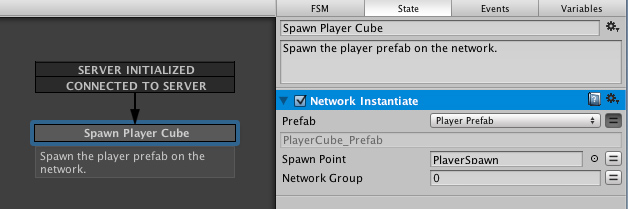

Spawning players need to happen in two situations:
- When the user starts a server, the user need to have his own player spawned.
- When running as a client: We need to spawn this User's player
Playmaker provides the two necessary Global Network Events to spawn players, "SERVER INITIALIZED" and "CONNECTED TO SERVER"

The spawning action is done very simply using the Network Instantiate action. It instantiate the PlayerCube_prefab which is network ready.
WARNING: It is important to realize that when you use Network Instantiate to spawn the PlayerCube_prefab,it will automatically spawn on all running application currently connected or that will connect to the network server. An Application running as a Client DO NOT need to spawn other players manually. "PLAYER CONNECTED" is in practice used to inform he user that a player arrived, for example by showing a small alert visually.
Now, in the sample, each player instance is responsible for destroying itself. You can learn more about this in the PlayerCube_prefab help section.